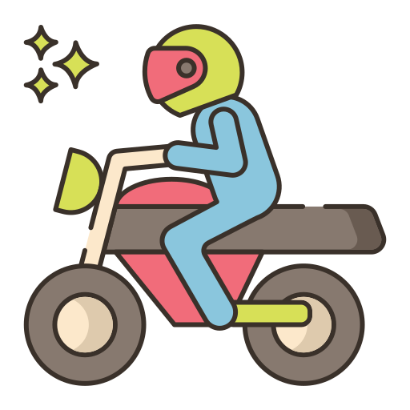
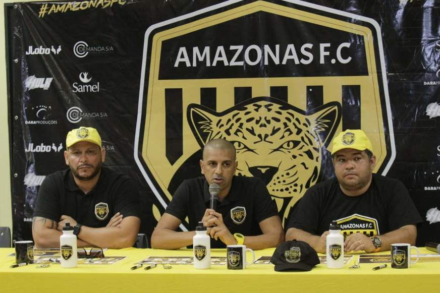
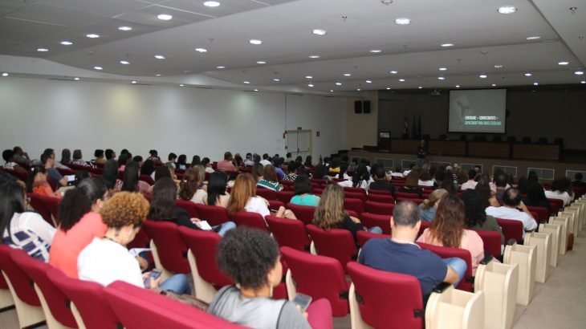

Mototaxi
TCE manda alerta para prefeito de Anori por uso de verbas

O meia atacante Andrey comentou sobre a chance de poder atuar no profissional pela primeira vez

O meia atacante Andrey comentou sobre a chance de poder atuar no profissional pela primeira vez